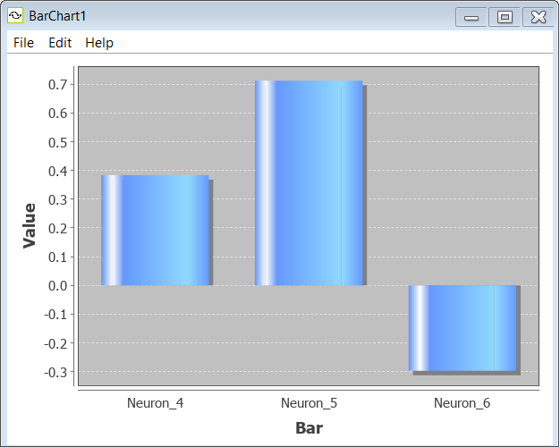
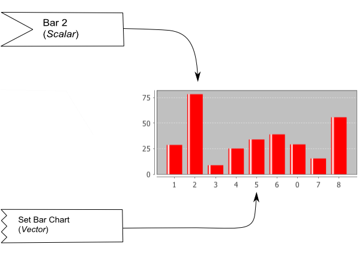

Bar Chart
Bar chart is a standard bar chart that can be used to represent changing set of quantities in a Simbrain simulation. For example, it is often useful to represent the activations of a group of neurons using bar chart and to watch how they change in time as the simulation runs.

Component Panel
Add: Adds a bar to the chart.
Delete: Deletes a bar from the chart.
Menus
File
Open: Opens a bar chart from a stored .xml file.
Save: Saves the current bar chart.
Save As: Saves the current bar chart and allows you to specify a name for the file.
Close: Closes the current bar chart.
Edit
Preferences: Allows you to set the bar charts appearance.
Auto Range: When checked it automatically scales the y-axis so that the largest bar fits inside the window. It can be useful to turn this off to get a better sense overall changes in magnitude since while it is on they will fill up the window.
Upper Bound: Sets the maximum value of the y-axis.
Lower Bound: Sets the minimum value of the y-axis.
Bar Color: Allows the color of the bar to be changed.

Help
Opens the main help page of bar chart.
Right-Click Menu
The context menu is a JFreeChart menu.
Couplings
Bars in a barchart can be set using couplings. The image above uses the graphical notation set up on the couplings page.
There are basically two ways to couple to barchart. Scalar couplings attach to scalar consumers that set a specific bar (if it is out of range the chart itself must be set). Vector couplings attach to a "set bar chart" attribute to set the values of the whole bar chart.